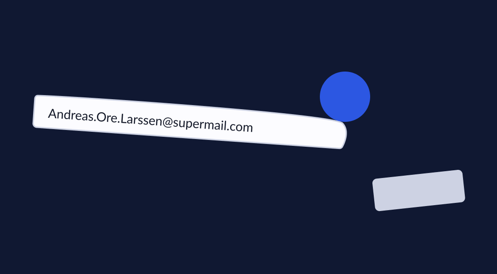
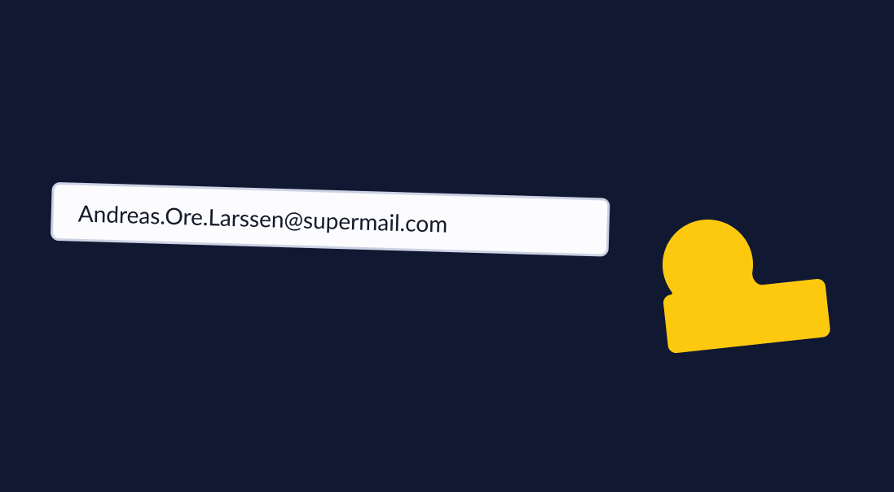
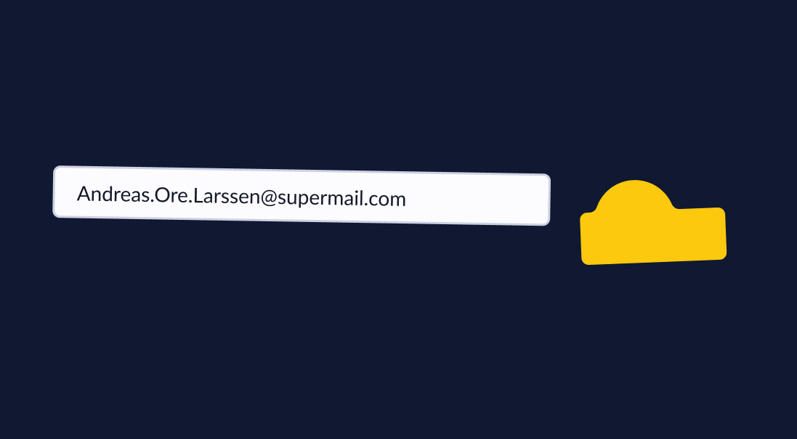
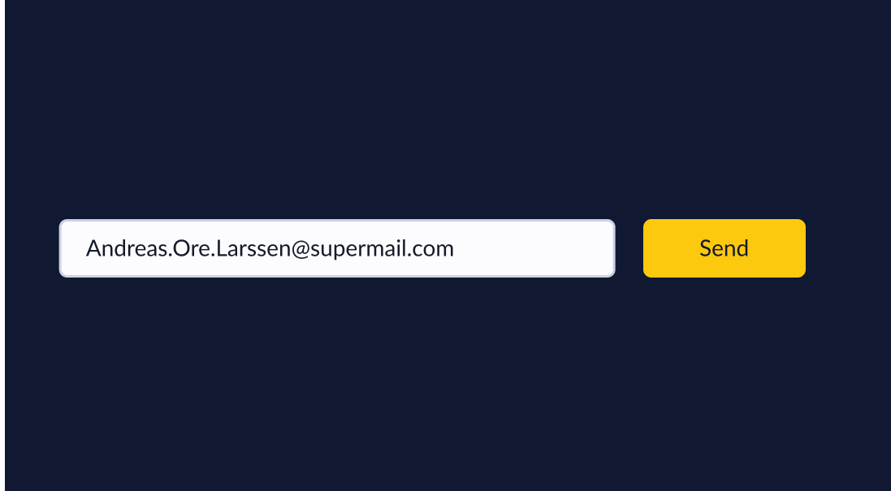
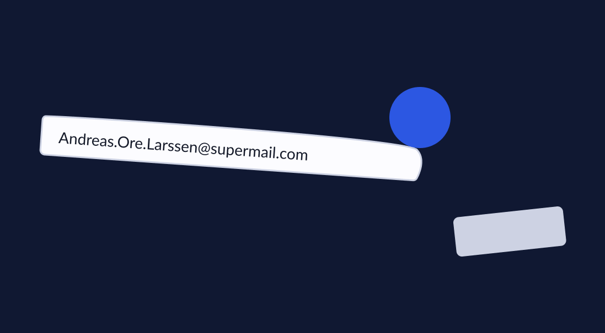
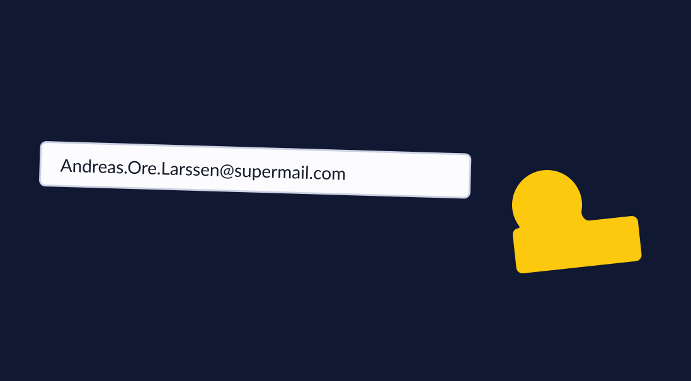
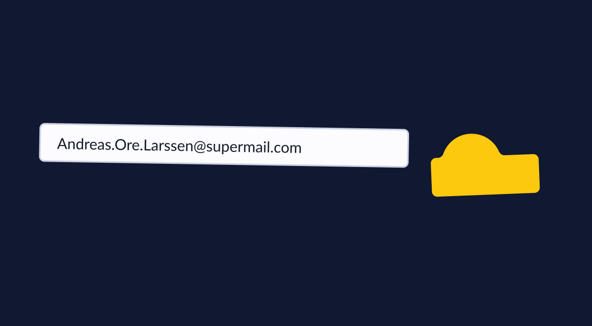
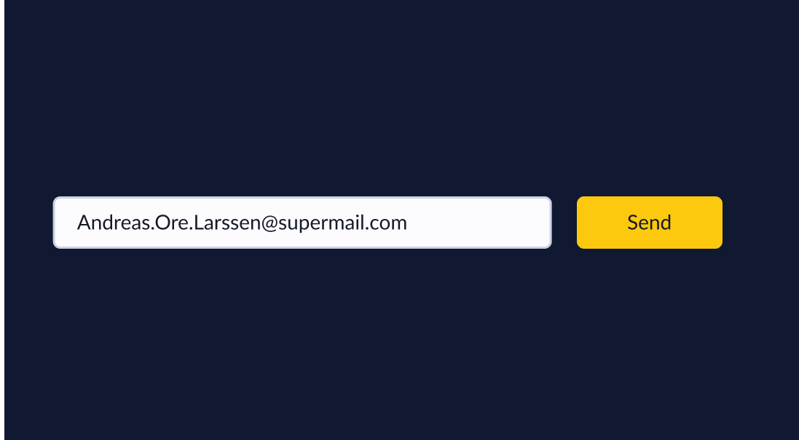

Navigation Structure
The link between the .html files, and thus our various pages, looks as illustrated below. index.html is the homepage that always has linking buttons to contact.html and roadmap.html. As index.html is the starting page, it should inform about the application and clarify what other features are available on the web page, in addition to linking to these. index.html should always be reachable with one simple click. The idea is that the index.html can be reached by pressing the logo.
index.html will contain hash tag links that lead to specific sections within the same page.
We have chosen to illustrate this as seen below, linking index.html to itself, creating a cycled graph.
Should the user enter contact.html, there will be a direct link to roadmap.html and vice versa. In roadmap.html, future features will be described. This information may trigger questions or interests. contact.html should therefore be easily accessible from here.

Page Layout and Appearance
Our focus when designing the Vexi page has been to recreate the general feeling and utility of the application. A visitor of the page should be exposed to a visual experience encapsulating the design of Vexi. Andreas has a desire to present Vexi as both friendly and playful. To encapsulate the feeling of catching a ride with Vexi we have focused on the dynamic of the page. Because we want as much of the content as possible to be located at the front page we have directed our focus to developing the design and flow of this page.
The general design of the page has a scroller at the right side of the page, which will be fixed and allow faster navigation between the content of the index page. In addition there will be two buttons at the top of the page to allow navigation to a contact page, and the roadmap. These paths will also be represented in the footer of the page. Unlike more traditional web pages, there will not be a fixed navbar.
The index page is divided into a few different parts. There is a “landing page” containing the logo, product title and sub-title, as well as the two buttons previously mentioned. Below that we will have a few testimonials, aimed to engage the site visitor of further reading. Follow this part there will be a product overview, structured as a user journey, explaining how to catch a ride with Vexi. Finally there will be a footer with relevant redirects and contact information.

The following specifics will be applied to every page:
- Color Scheme
- Primary - #FCC90E
The primary color will be used to call attention to the most important actions and content of the page.
- Secondary - #101832
The contrasting nature of Vexi’s dark blue secondary color, renders it useful as a backdrop for the primary color and it’s usage. Therefore we will use it mainly as a background color, but also to add actions on white backgrounds.
- Tertiary - #2C57E2
The tertiary color is used to create highlights that are not necessarily as eye catching as the primary color, but more attention seeking than the secondary color. It has been created to allow us flexibility in how we draw the focus of our page visitors.
- White - #FCFCFF
The white color will be used both for fonts on dark backgrounds and as a background for darker content. This will alternate to create a flow of the index-page that is easier to follow.
- Black - #151A29
Mainly used for fonts on white backgrounds.
- Success - #3DD972
When filling out and sending forms, or managing to finish other tasks a feedback indicating success will be added. The color of that feedback is defined by the “success”-color.
- Warning - #F3DC0B
When the user is about to do a questionable action, like submitting a form without a few fields that are not required, but recommended they will get a warning using the “warning”-color.
- Error - #FC0E39
Upon taking actions that are not allowed, the user will be provided an error, using the error-color.
- Title: The title will be “Vexi”, and will be located at a eye-catching spot on the front page.
- Background: The background will mainly use Vexi’s dark blue secondary color, but will alternate using a contrasting white to separate types of content.
- Scroller: On the main page there will be a scroller with in-page links on the right side to make it easier for visitors to jump to different blocks of content on the page.
- Logo: Vexi’s logo will be located in the navbar on the left hand side. It will contain a link that takes you back to the front page if you click it.

 






